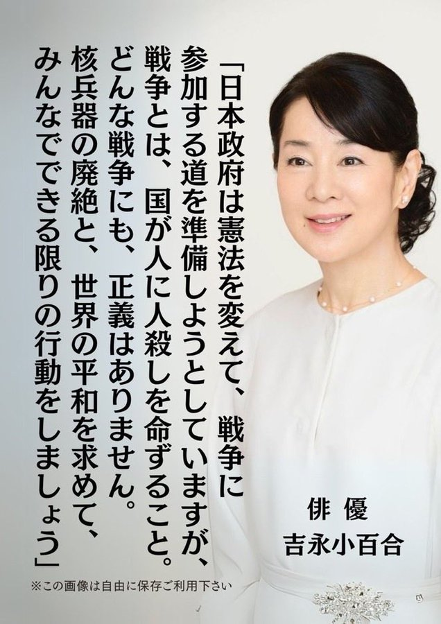

私の孫が正則高等学校に今年入学しお世話になって、初めて『あしたへ』の戦争体験記第十九号を拝見いたしました。PTA・教育文化委員会の方々、先生方がこんなにも素晴らしい、ご立派な良い記録誌を企画なさったことに驚き感無量、感嘆いたしました。私は孫が九人おりますが、今までこの様な本を出した学校はありませんでした。
御校の教育指導が二十一世紀にきっと佳い花が咲くことを確信し感謝申し上げます。又ご執筆の方々の堂々とご立派な文章のご協力を拝見いたし怖じ気づきましたが勇気を奮って私なりに『あしたを拓くために』幾らかでも参考になりましたらと拙い記を掲載させていただきます。
戦後五十五年の歳月も経ってしまえば短い歴史に思われます。私は新宿の或る年輩者(六十才から九十六才)の学習会の友人に私を”娘”と呼ぶ元海軍の潜水艦の艦長をしている方が居りまして、時々懇親の意でお会い致しました。そんな時、過去、現在、未来の事なども話したりします。戦争の話となると、口を閉ざし語るを良しとはせず「語るのもおぞましい、眠った子を起こさないで」と応召した老兵もおりました。それは戦いの習わしで忌まわしい残慮行為もあったことでしょう。そんななかで艦長はおもむろに低い声でおっしゃいました。
「戦争終結がもっと早かったら部下の命を助けることが出来たのに! 敵には空から海から、また海の中からまで電波で居所が知れ、集中攻撃、爆弾の雨霰に多くの兵は忽ち阿鼻叫喚の地獄と変わり、自分が気がついた時には回りに幾人も生存はしておらず、二百余の部下を失った。 粉々に破壊された艦の破片に縋(すが)って血だらけの躰が浮き沈みしているのや、また満足な姿ではなく浮流していた。この若い命、働き手であろう中年の命。国を護る為には我家の誇りと身内の死を覚悟しつつ旗を振って見送った両親に、私は艦長として何とお詫びをしたら良いか暫くは半狂乱状態で涙も出なかった。」
その語らいに、いつの間にか辺りはシーンとなって聞いていました。やや於いて「わしは戦いが勝っても負けても部下である二百余名の命を目の前で亡くし、わしが生還したことが何十年経っても脳裏に焼き付いて離れない。
戦犯で小菅刑務所にも入った。もう死は覚悟していた。『あの世で君らと一緒に新世界を築き楽しく暮らそう』と独り言で自身を慰めた。これが部下達の遣族に対しての償いにもなれば満足であると思う毎日だったんだョ。或る日のこと突然！！ 呼び出された。
『いよいよ来たな！』と腹を決めた。体が震えた。これが武者震いだと思ったら落着いて歩いて堂々と部屋へ入った矢先”無罪放免釈放”これには驚いたなあ！ せめてもの償いとして恩給は辞退した。今は、三人の息子、娘夫婦が老後を安穏に暮らせるようと女房と二人分送って来ている。だから病気をしないように好きな酒を毎晩飲んでいるんだヨ！！ ウッハッハァー。」
豪快なその笑い。でも八十五才の顔の皺の中に涙が光っていました。 矍鑠(かくしゃく)とした彼は、或る朝、出掛けるため洗面所で髭をそり終えたところでバタッと倒れたとの事、「それっきりでした」と奥さんは話されました。苦痛も患いもせず大軍人の大往生の御冥福を祈りながら私は一首を捧げました。
婚家の前田家は福井藩の末商、私の祖父は伊達藩で共に没落士族から商家になったので仲人は両家の釣合いを見て戸籍を調べて縁談を進めます。これが一般の戦前の風習でした。
昭和十七年四月初旬のお見合いです。その四月十八日に初めて東京空襲があり戦時体制は益々強化され、全国的に『慶弔ごとも質素倹約を旨とすべし』の通達で男子は国防色のカーキー色、帽子も同色の戦闘帽に、女子は木綿の上下のモンペ姿に胸に十糎(cm)位の白布に老若男女の住所氏名を書いたものを縫い付けました。
学生達も国民服、標準服と大衆と余り変わらない服装となりました。空製も暫くは無く静かな上空の中、ラジオ等は「勝った、勝った」の情報だったので誰もが負け戦になるとは思いませんでした。
仲人から急がされるままに十一月十日に淀橋区柏木 (現・新宿区北新宿)の産土神(うぶすながみ)の鎧神社で挙式をしました。
披露宴は帝国ホテル(明治村に移築された建物)で行いました。ここは当時から、諸外国の貴寅客や有名人の宿泊及び社交場でもあったので婚礼服装は文金高島田、大振り袖の花辺姿も黙認でした。娘時代の憧れが戦時中でも実現できたことを今でも感謝しています。むしろホテル側の要望でもあり、終了後お礼を言われたと聞きました。
披露宴参列者も三十名とされ、舅はモーニングで親戚は礼服、父、叔父らは羽二重の五つ紋に仙台平の袴、両家の母は丸髷に江戸袴他の客や妹も長裾衣裳でしたので異様な姿に驚異を感じられたのか外人が代わる代わる来て、大きな手を広げ微笑しながら私に話しかけましたが、「ブラボー」の意味しか通じませんでした。
戦前の嫁御寮は回りをキョロキョロ見るな、喋るな、撤露宴でも余り食べるな等の原則的なこともありました。また、挙式後、近所の懇意な家への挨拶回りの風景も私で最後の見納めと言われました。
夫は役所勤めの合間、両親の蕎麦商を手伝っていましたが結婚後三ヶ月で軍属としてラバウルに連れて行かれました。十八年十一月に娘が生まれた頃から、食糧配給も数少なくなり、郊外に親戚や農家へと買い出しに行く人々が増えて来ました。俗に買い出し部隊といいました。その内、お金だけでは売ってくれないのが大概なので、大事な着物を一枚、二枚と持って買いに行くようになりました。これが筍生活なのです。
飲食業界も統制の波で蕎麦粉、饂飩粉の主粉が減り、大豆粉、藷粉、とび粉で団子を作って売りました。また時には腐れかかった農林一号の藷を悪いところは捨て残りは蒸して売り、たまにお米と野菜が入荷すると、お雑炊として売るのです。狡(ずる)いことをしないように、割り箸を立て、倒れない固さが規定とされ、何日分、何人分と定められた業務用なので横流しや闇売りは出来ません。自宅で食べる位の余裕は少しはありましたが…。
十一時に開店なのに八時頃から器、お鍋を持って行列しています。幼児は泣いて親に大声で叱られ、老人は倒れたり、近所の店からは煩(うるさ)い邪魔だと言われたりしました。列を離れると後に戻されたり食物を買う為にも飢餓地獄の有様です。売り切れると空の容器を持って、とぼとぼと帰る人の後ろ姿を見るに忍びず、或る日行列をしないですむように、有り合わせのボール紙に番号を書いて並んでいる順に渡し十一時から十二時半としました。何時間も並ぶこともなく貧血を起こす人もなくなり、涙を流して喜ばれました。
その後戦局は日増しに悪化し、B29の編隊が焼夷弾を落として去って行きます。指定された時間には防空頭巾を被り、空襲警報のサイレンが薄気味悪く鳴っても食糧を得るためには恐怖と戦いながらも待っていました。或る日、裏口から赤ちゃんを背負った女(ひと)が「お乳が足りないので何でも良いから売って下さい。」と涙ながらに懇願されたのです。私は「私も足りなくて泣いてばかりいるから、こうしてオンブしているのよ、私の自由には出来ないの」と言って明日の食券を二枚、ポケットからそっと出して渡したことが昨日の事のように思い出されます。
その頃、学童疎開、幼老者の疎開もとっくに終わり、我が家にも乳児疎開を催促する町会長等からの声もありましたが、細々ながらも商いをしているので帰郷できませんでした。
十九年十一月二十四日に中島飛行機工場を目指してB29の大編隊が押寄せました。これ以後、空襲は頻繁になり軍需工場、都内と来襲しました。警報のサイレンの音がだんだん悲鳴のように聞こえるようになってきました。他家の犬が遠吠えとは違った喉から血の出るような物悲しい声でサイレンに合わせて鳴くのです。
この年の十二月下旬に業務用配給が最後となり商売も三十日で閉鎖と解ったので、やっと疎開が実現し、大久保駅へ切符を買いに行く途中、頭上を銀の翼が飛んでいきました。こんな戦況が続く中をー日に何枚と限られた切符を幼子を背負い三日を通いつめ、やっと買うことが出来たのです。
翌年五月二十五日の東京最後の壌滅的大空襲で山の手全域が被災し焦土と化し、我が家も延焼しました。
戦争ほど残慮で悲惨なものはありません。今の平和が永く続くことを祈ります。
復員せし夫
戦いに敗れて還る 心憂(う)し 東京空襲吾家も焦土核兵器の廃絶と、世界平和を求めて吉永小百合
この画像は自由に保存ご利用下さい
